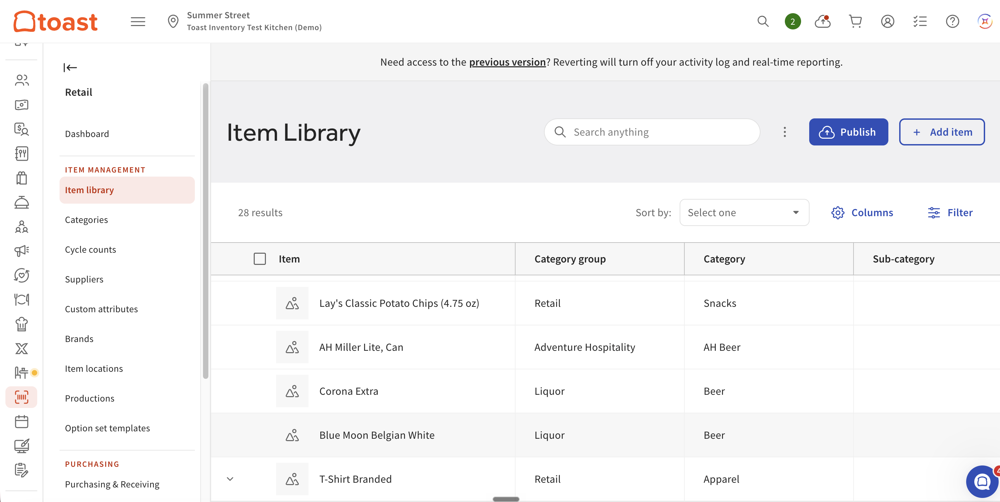

Want to test new inventory features directly on your own Toast account? Follow these steps to request early access through the Test Kitchen program.
You must be an active member of Toast's Test Kitchen program and have agreed to the beta agreement terms before proceeding. Membership confirms you understand that features in this sandbox are pre-release.
Fill out the required survey to formally request access. This helps the team track participants and ensure proper onboarding.
Send an email to the Test Kitchen team specifying which accounts you would like the feature enabled on. Be sure to include the account name(s) so the team can enable access accurately.
Include the full account name(s) you want enabled in your email.
The team will enable access on the specified account(s) and send you a confirmation email once it has been done. No further action is needed on your end until you receive that email.
Once confirmed, log in to Toast Tab and navigate to the account that was enabled. From the left-hand navigation, go to Retail and then Item Library — your one-stop shop for all items you stock track against.

Under "Item Management," select Item Library to see all trackable items.